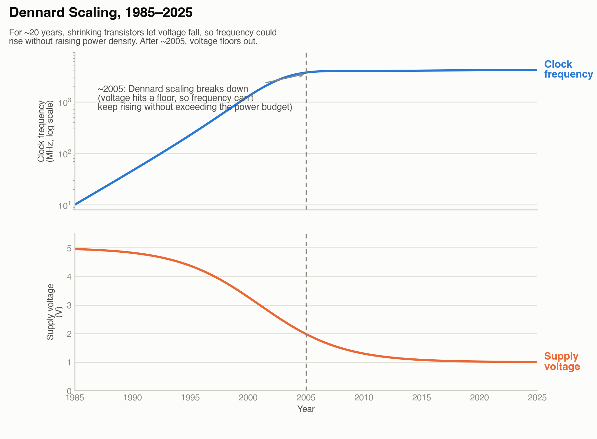
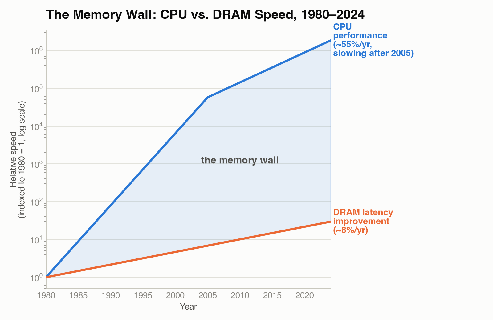

Module 1: The Case for GPUs
COSC 435 — GPU Acceleration
Session 1 · Sep 14 · The End of Free Lunch
Today’s Plan
- Why serial CPU performance stopped improving for free
- Three physical walls: clock speed, power, memory
- Why the industry’s answer was “more cores,” and why GPUs are the extreme end of that answer
20 Years of Free Performance
- From roughly 1980 to 2004, CPU clock speed doubled about every 18 months (a corollary of Moore’s Law, below)
- Every year, the exact same program ran faster on new hardware — with zero code changes
- Developers could treat performance as someone else’s problem: just wait for next year’s chip
Moore’s Law, Precisely
“The number of transistors on an integrated circuit doubles roughly every two years, at roughly constant cost.” — Gordon Moore, 1965
- Moore’s Law is about transistor count, not clock speed directly
- For ~40 years, more transistors did translate into higher clock speed, because of a companion effect: Dennard scaling
- Dennard scaling (1974): as transistors shrink by a factor, you can also lower their voltage by that same factor — so power density stays roughly constant even as clock speed rises
- Transistor count kept doubling. Clock speed did not — Dennard scaling broke first (next slide)
Clock Speed Stagnation

- Single-core clock speed has been stuck at ~3–4 GHz for two decades
- Single-thread performance still creeps up (better branch prediction, bigger caches, deeper pipelines) — but those are diminishing returns, not doubling every 18 months
- Something had to replace “just run it at a higher frequency”
The Power Wall

- Dynamic power draw of a chip is approximately \(P \approx C \cdot V^2 \cdot f\) (capacitance × voltage² × frequency)
- Under Dennard scaling, shrinking transistors let you lower \(V\) every generation — so raising \(f\) didn’t raise power density
- Around 2005 (~90 nm), \(V\) hit a floor: drop it further and transistors leak current even when “off,” wasting power and generating heat with no benefit
- Without falling \(V\), raising \(f\) directly raises power density — past what air cooling (and eventually any practical cooling) can remove from a chip the size of a fingernail
The Memory Wall

- CPU compute throughput improved dramatically for decades; DRAM latency (time to fetch one value) improved only modestly over the same period
- A single memory fetch has taken roughly 100 ns for a long time — during which a modern CPU core could execute hundreds of instructions
- Consequence: a core that issues one memory request and then waits idles for hundreds of cycles unless something else fills that time
- CPUs hide this with large caches and speculative prefetching; GPUs hide it differently — by keeping thousands of other threads ready to run while one thread waits (Module 2)
The Industry’s Answer: More Cores
- Clock speed capped by the power wall. Memory latency capped by physics. Single-core performance alone could no longer 10× every few years
- The industry’s pivot (mid-2000s onward): stop making one core faster, put more cores on the chip instead
- Consumer CPUs went from 1 core (pre-2005) → 2 → 4 → 8 → today’s 16–32+ core desktop chips
- A GPU is the same idea taken to its logical extreme: instead of tens of powerful cores, thousands of small, simple ones
One Expert vs. a Crowd
[DIAGRAM] — Two side-by-side scenes (same visual language as Module 0’s cashier diagram). Left: one highly-skilled cashier serving customers one at a time from a long line, labeled “CPU core: minimize time per customer.” Right: many ordinary cashiers, each serving one customer simultaneously from short lines, labeled “GPU cores: maximize customers served per minute.” A stopwatch icon on the left, a “customers/min” throughput gauge on the right.
- A CPU core is built to finish one task as fast as possible — deep pipelines, branch prediction, large caches, all in service of low latency
- A GPU core is built to keep as many tasks moving simultaneously as possible, even if each one individually is slower — high throughput
- Neither is “better” in general — they’re optimized for different jobs. Session 2 puts real numbers on this comparison
Amdahl’s Law — A First Look
Even if you accelerate 95% of a program perfectly on parallel hardware, the unaccelerated 5% caps your total speedup:
\[\text{Speedup} \leq \frac{1}{1 - 0.95} = \frac{1}{0.05} = 20\times\]
- No matter how many cores (or GPU threads) you throw at the parallel 95%, the serial 5% eventually dominates the wall-clock time
- This is why “just add more cores” has diminishing returns, and why which part of a problem you parallelize matters as much as how well
- We derive and apply this formally in Module 3 — for now, just the intuition: serial code is a ceiling on parallel speedup
This Week
- Session 2 (Wed, Sep 16): CPU vs. GPU design philosophy, with real numbers — FLOPS, memory bandwidth, SIMD
- Lab 03 (Fri, Sep 18): Benchmark a loop vs. a vectorized NumPy call; measure the actual speedup ratio and compute GFLOP/s
- EL-02 (GPU architecture video, due Sun Oct 4): gives the physical/circuit picture that will make Module 2’s kernels feel concrete rather than abstract
Session 2 · Sep 16 · CPU vs. GPU Design Philosophy
Today’s Plan
- Put real numbers on “latency-optimized vs. throughput-optimized”
- Three metrics that quantify the difference: FLOPS, memory bandwidth, SIMD width
- When a GPU actually wins — and when it loses
- Where GPUs came from (GPGPU/CUDA), and where the field is now
- Checkpoint CK-03 preview, and what’s due before Lab 3
Two Design Philosophies, Defined
- Latency-optimized (CPU): minimize the time to finish one task, even if that costs silicon area and power that a hundred smaller cores could have used instead
- Throughput-optimized (GPU): maximize the number of tasks finished per second, even if any single task takes longer than it would on a CPU
- Every architectural difference on the next few slides is a consequence of one of these two design goals
Anatomy of a CPU Core vs. a GPU Core
[DIAGRAM] — Two die diagrams side by side. CPU die: a handful (4–16) of large, complex core blocks, each containing a big labeled cache, a “branch predictor” block, and an “out-of-order execution engine” block — most of the die area is control logic and cache, a small fraction is ALUs. GPU die: thousands of tiny, simple core blocks (small ALU icons) arranged in a dense grid with much smaller caches and no branch-predictor block — most of the die area is ALUs.
- CPU cores spend most of their transistor budget on control: predicting branches, reordering instructions, caching data — all to keep one instruction stream fast
- GPU cores spend most of their transistor budget on arithmetic: many small, simple ALUs with minimal control logic each
- Removing branch prediction and out-of-order execution is a deliberate trade: a GPU core is “dumber” per-core, but you get thousands of them for the same silicon
The Numbers, Side by Side
| CPU | GPU | |
|---|---|---|
| Cores | 8–32 | 3,000–18,000 |
| Clock speed | 3–5 GHz | 1–2 GHz |
| Memory | ~64 GB DDR5 | 16–80 GB GDDR6X / HBM |
| Memory bandwidth | ~100 GB/s | ~1,000–3,300 GB/s |
| Design goal | Minimize latency | Maximize throughput |
- Per-core, the CPU is faster (higher clock) and smarter (branch prediction, deep pipelines)
- In aggregate, the GPU has 100–1,000× the core count and 10–30× the memory bandwidth
- Neither number alone tells you which chip is faster for your problem — that depends on whether your problem can use thousands of simultaneous, independent cores (next few slides)
FLOPS: Measuring Raw Compute
- FLOPS = floating-point operations per second — one add or one multiply on a floating-point number counts as one FLOP
- GFLOPS = \(10^9\) FLOPS, TFLOPS = \(10^{12}\) FLOPS
- A “multiply-then-add” (fused multiply-add, FMA) is often counted as 2 FLOPs, since it does both operations in one hardware step
- Achieved GFLOP/s for a program = (total FLOPs the program performs) ÷ (measured wall-clock time) — this is exactly what Lab 3 asks you to compute
Memory Bandwidth: The Other Half of the Story
- FLOPS tells you how fast the ALUs can compute — but they can’t compute on data that hasn’t arrived yet
- Memory bandwidth = bytes per second the chip can move between memory and its compute units
- Arithmetic intensity = FLOPs performed per byte of data moved — the ratio that determines whether compute or memory is your bottleneck
- Low arithmetic intensity → memory-bound: ALUs sit idle waiting on data, no matter how fast they are
- High arithmetic intensity → compute-bound: memory keeps up, so raw FLOPS is what limits you
SIMD: One Instruction, Many Data
[DIAGRAM] — One “instruction dispatch” box at the top labeled “ADD” with an arrow fanning out to 8 small ALU boxes in a row below it, each ALU box processing a different pair of numbers from two aligned arrays but executing the identical instruction. Contrast with a second, smaller diagram below: one ALU box processing one pair of numbers with a “next instruction” loop arrow, labeled “scalar (one instruction, one datum).”
- SIMD = Single Instruction, Multiple Data: one instruction, dispatched once, applied to many data elements in lock-step
- CPUs have narrow SIMD units (e.g. AVX processes 8 float32s at once) as an add-on to their mainly-scalar design
- GPU cores execute in wide lock-step groups by default — NVIDIA calls a group of 32 threads executing the same instruction together a warp (SIMT — Single Instruction, Multiple Threads — the GPU-specific variant; full mechanics in Module 2)
- SIMD/SIMT is why “same operation on every element” (like NumPy vectorization) maps so naturally onto GPU hardware
When Does the GPU Win?
The GPU wins when a problem has:
- Many independent operations — no data dependencies between them, so they can run in any order or simultaneously
- The same operation on every element — one instruction can serve millions of threads (SIMD/SIMT, previous slide)
- Enough arithmetic per byte moved — high arithmetic intensity, so the ALUs aren’t left waiting on memory (previous-previous slide)
- NumPy’s vectorized array operations are a preview of exactly this shape — which is why Module 0’s “why loops are slow” lesson is really a GPU-suitability lesson in disguise
When Does the GPU Lose?
The GPU loses (or the CPU wins) when:
- Serial dependencies dominate — each step needs the previous step’s result, so there’s nothing to run in parallel (Amdahl’s Law from Session 1 sets the ceiling)
- The problem is too small — launching thousands of GPU threads has fixed overhead; if the work doesn’t fill the device, that overhead isn’t amortized
- Data transfer costs more than the speedup — moving data to and from the GPU takes time; if the computation itself is cheap, the round trip can cost more than it saves
From Graphics to General Purpose
- GPUs were originally built to shade millions of pixels in parallel — each pixel computed by the same shader program, independent of its neighbors
- Around 2006, researchers noticed: “shading a pixel” and “processing one element of a large independent array” are the same computational shape
- Any “embarrassingly parallel” problem (independent, identical per-element work) could, in principle, be reframed as a graphics-shader-style workload
- NVIDIA formalized this with CUDA (released 2007) — a way to write general-purpose parallel code for the GPU without pretending it’s a graphics shader
NVIDIA’s CUDA Model
- The programmer writes a kernel — the code for what one thread does
- The programmer specifies how many threads to launch (the grid); the hardware creates and schedules all of them
- The same kernel code runs on every thread, simultaneously, each operating on a different piece of data (SIMT, from earlier this session)
- The programmer declares the parallelism; the hardware executes it — you never write a loop that says “now do item 2”
The Scale of Modern GPU Computing
- A single high-end datacenter GPU (H100-class): on the order of 2,000 TFLOPS at reduced precision (FP16) — roughly 1,000× a high-end CPU’s FLOPS
- A single training run for a large AI model can use thousands of GPUs, continuously, for weeks
- Serving inference (e.g. a chatbot) to millions of users means continuous, ongoing GPU demand, not a one-time cost
- This scale is why GPU programming skill is in high demand — the compute budget of modern computing runs through chips like the ones in this table
The Organizing Question of This Course
Given a problem and a GPU with thousands of cores, how do you structure the code so that all of them are doing useful work simultaneously, and waiting as little as possible?
- Every module this semester answers one piece of this question:
- Module 2: how to launch and index threads correctly
- Module 3–4: how to keep memory from being the bottleneck
- Module 5: how threads cooperate when the answer isn’t purely independent per-element
- Module 6+: when to use a library instead of writing the kernel yourself
Checkpoint Preview
Checkpoint CK-03 will ask you to:
- Implement the same computation as a Python loop and a vectorized NumPy call
- Time both and compute the speedup ratio
- Reflect on how that speedup motivates moving to a GPU with thousands of cores
Most of This Module Isn’t Checkpointed — By Design
- CK-03 covers the loop-vs-vectorized timing skill
- The conceptual heart of this module — the CPU-vs-GPU latency/throughput tradeoff and which problems suit GPU acceleration — has no single auto-gradable “correct answer,” the way a kernel’s numeric output can be checked
- You’re still tested on this material: Quiz 02 and both exams cover it, just not via a Blackboard-graded notebook
Looking Ahead
- Lab 03 (Fri, Sep 18): Benchmark loop vs. vectorized NumPy; plot speedup; compute achieved GFLOP/s — directly uses this session’s FLOPS definition
- CK-03 (same day, 20 min): timing + speedup checkpoint
- EL-02 (due Sun Oct 4): GPU architecture video — builds the physical picture for Module 2’s kernels
- Module 2 starts Mon, Sep 21: Streaming Multiprocessors, CUDA cores, and — Wed Sep 23 — the thread/warp/block/grid execution model, with Quiz 2 that same day covering this module